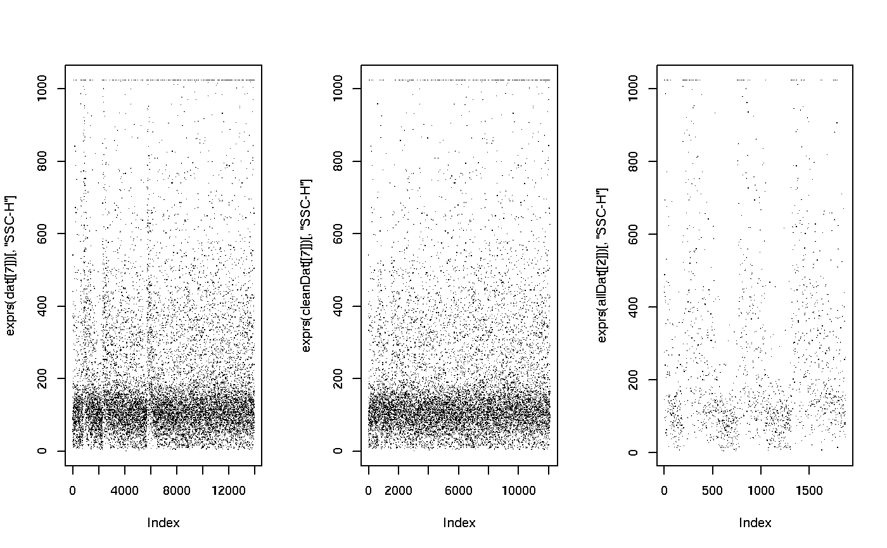

timeFilter-class.RdDefine a filter that removes stretches of unusual data
distribution within a single parameter over time. This can be used to
correct for problems during data acquisition like air bubbles or clods.
timeFilter(..., bandwidth=0.75, binSize, timeParameter, filterId="defaultTimeFilter")
| ... | The names of the parameters on which the filter is supposed to work on. Names can either be given as individual arguments, or as a list or a character vector. |
|---|---|
| filterId | An optional parameter that sets the |
| bandwidth, binSize | Numerics used to set the |
| timeParameter | Character used to set the |
Returns a timeFilter object for use in filtering
flowFrames or other flow cytometry objects.
Clods and disturbances in the laminar flow of a FACS instrument can cause
temporal aberrations in the data acquisition that lead to artifactual
values. timeFilters try to identify such stretches of disturbance by
computing local variance and location estimates and to remove them from the
data.
bandwidthObject of class "numeric". The
sensitivity of the filter, i.e., the amount of local variance of
the signal we want to allow.
binSizeObject of class "numeric". The size
of the bins used for the local variance and location
estimation. If NULL, a reasonable default is used when
evaluating the filter.
timeParameterObject of class "character",
used to define the time domain parameter. If NULL, the
filter tries to guess the time domain from the flowFrame.
parametersObject of class "character",
describing the parameters used to filter the flowFrame.
filterIdObject of class "character",
referencing the filter.
See the documentation of timeLinePlot in
the flowViz package for details on
visualizing temporal problems in flow cytometry data.
Class "parameterFilter", directly.
Class "concreteFilter", by class
parameterFilter, distance 2.
Class "filter", by class parameterFilter,
distance 3.
Objects can be created by calls of the form new("timeFilter",
...) or using the constructor timeFilter. Using the
constructor is the recommended way.
signature(x = "flowFrame", table =
"timeFilter"): The workhorse used to evaluate the filter on
data. This is usually not called directly by the user.
signature(object = "timeFilter"): Print
information about the filter.
flowFrame, filter for
evaluation of timeFilters and split and
Subsetfor splitting and subsetting of flow cytometry data sets
based on that.
## Loading example data data(GvHD) dat <- GvHD[1:10] ## create the filter tf <- timeFilter("SSC-H", bandwidth=1, filterId="myTimeFilter") tf#> time filter 'myTimeFilter' with settings: #> bandwidth=1## Visualize problems if (FALSE) { library(flowViz) timeLinePlot(dat, "SSC-H") } ## Filtering using timeFilters fres <- filter(dat, tf) fres[[1]]#> A filterResult produced by the filter named 'myTimeFilter'#> myTimeFilter+: 3420 of 3420 events (100.00%)#> myTimeFilter+: 12104 of 13979 events (86.59%)## The result of rectangle filtering is a logical subset cleanDat <- Subset(dat, fres) ## Visualizing after cleaning up if (FALSE) { timeLinePlot(cleanDat, "SSC-H") } ## We can also split, in which case we get those events in and those ## not in the gate as separate populations allDat <- split(dat[[7]], fres[[7]]) par(mfcol=c(1,3)) plot(exprs(dat[[7]])[, "SSC-H"], pch=".") plot(exprs(cleanDat[[7]])[, "SSC-H"], pch=".") plot(exprs(allDat[[2]])[, "SSC-H"], pch=".")